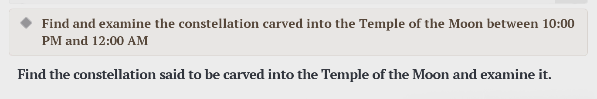

Segure Alt + X
A tecla é sua enquanto estiver pressionada. Solte e tudo some — o jogo continua exatamente onde estava.
Segure uma tecla, aponte para uma palavra na tela do jogo e veja a tradução na hora. Salve no deck e revise depois — sem alt-tab, sem copiar e colar, sem tirar o jogo do foco.

O gesto é o de quem passa o dedo numa palavra enquanto lê. Não existe "modo ligado": em repouso o PapaPlay não desenha nada e não consome praticamente nada.
A tecla é sua enquanto estiver pressionada. Solte e tudo some — o jogo continua exatamente onde estava.
A tradução aparece numa linha discreta sobre a tela. Nada de caixas em volta de tudo que o app conseguiu ler.
O card guarda a palavra, a frase inteira, a tradução dela e o recorte da tela onde você encontrou.
Tudo roda na sua máquina. Depois da instalação, o PapaPlay funciona com o cabo de rede desconectado.
Acepções, classe gramatical e IPA, construídos do Wiktionary. Reconhece flexões: clicou em "ran", o card é de "run".
A frase inteira do diálogo, traduzida por um modelo que roda localmente — sem mandar nada para servidor nenhum.
Cada palavra guarda a cena em que apareceu. Você não revisa uma lista de vocabulário: revisa a sua partida.
FSRS, o mesmo algoritmo do Anki moderno: cada palavra volta pouco antes de você esquecer, e não antes disso.
Dias seguidos, taxa de acerto e quanto vocabulário cada jogo te rendeu. O suficiente para manter o hábito, e nada além.
Exportação em CSV a qualquer momento. Nada fica preso aqui dentro, e o banco é um arquivo na sua pasta de usuário.
Um app que lê a tela precisa ser explícito sobre o que faz com ela. O que o PapaPlay faz:
Funciona em qualquer coisa desenhada na tela: jogos em janela ou borderless, navegador, leitor de PDF, visual novel. Em tela cheia exclusiva o Windows não deixa nada ser desenhado por cima — nesse caso, troque o jogo para borderless. Como a leitura é por OCR, fontes muito estilizadas erram mais que fontes de interface.
Não. A overlay nunca chama o Windows para trazer a si mesma para a frente — é uma decisão de projeto, porque um alt-tab forçado no meio de uma luta é exatamente o tipo de coisa que faz desinstalar o app. O jogo continua recebendo o teclado o tempo todo.
O PapaPlay não injeta código, não instala hook de teclado de baixo nível e não lê a memória de nenhum processo. Ele captura a imagem da tela por uma API pública do Windows, do lado de fora — a mesma categoria de um programa de gravação de tela. Ainda assim, nenhum app de terceiros pode prometer o comportamento de um anti-cheat específico, então consulte as regras do seu jogo se a competição for levada a sério.
Só uma vez, e só se você quiser a tradução da frase inteira: o modelo de tradução tem cerca de 330 MB e fica fora do instalador para ele não pesar isso tudo. Dicionário, OCR, deck e revisão funcionam offline desde a instalação.
Porque o que pesa — o tradutor de frases — é baixado à parte, uma vez por máquina, e sobrevive às atualizações do app. Assim uma correção de bug não custa 350 MB de download de novo.
Nada. Não há assinatura, anúncio nem limite de palavras. O núcleo é offline e sem custo por uso, e é assim que ele foi projetado desde o começo.
Inglês para português do Brasil. É o par que o projeto faz bem hoje; outros idiomas exigem outro dicionário e outro modelo de tradução, e entram só quando puderem entrar com a mesma qualidade.